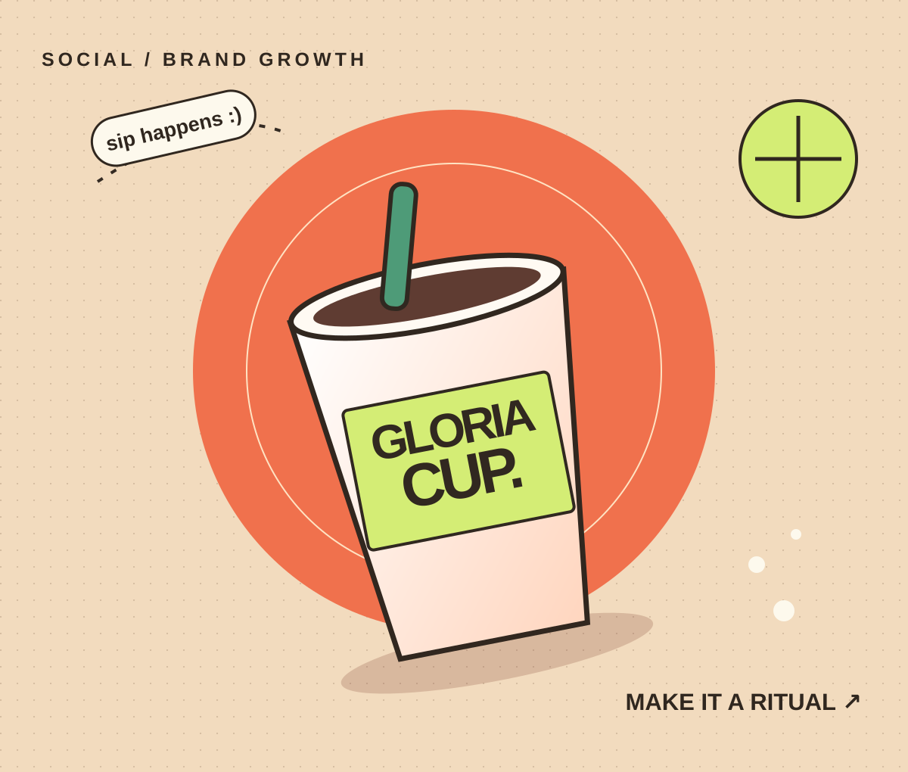

Gloria Cup.
Turning an everyday beverage brand into a 20K+ organic community and daily lifestyle ritual.

The challenge.
Crowded beverage feeds fail when brands post static product shots with no human ritual attached. The opportunity for Gloria Cup was to become a familiar, craveable part of the audience’s daily routine—turning passive scrollers into an active, returning community.
Strategic direction.
I architected a lifestyle-first social growth engine built around relatable daily occasions, high-retention short-form Reels, and conversational caption frameworks—pairing visual feed cohesion with repeatable organic discovery hooks.
Execution in motion.
- Mapped core daily moments and emotional triggers where the beverage naturally belongs in a customer’s day.
- Engineered repeatable short-form Reel formats (recipe rituals, sensory pours, lifestyle transitions) built for watch-time, saves, and shares.
- Established a warm, participatory caption voice and comment-to-DM loop to accelerate early-hour algorithmic reach.
- Used weekly Meta Business Suite retention and engagement signals to double down on winning creative pillars.
Commercial impact.
Scaled the brand’s organic Instagram community past 20,000+ engaged followers, establishing a recognizable lifestyle identity, higher save-to-impression ratios, and consistent inbound customer inquiries.
Deliverables & stack.
Core production capabilities and deliverables executed in this workflow:
- End-to-End Instagram Strategy, Content Calendar & Grid Direction
- High-Retention Short-Form Reel Production & Hook Scripting (CapCut Pro, Canva, Figma)
- Active Community Nurturing & Micro-Influencer Collaboration Playbook
- Meta Business Suite Performance Tracking & Monthly Iteration